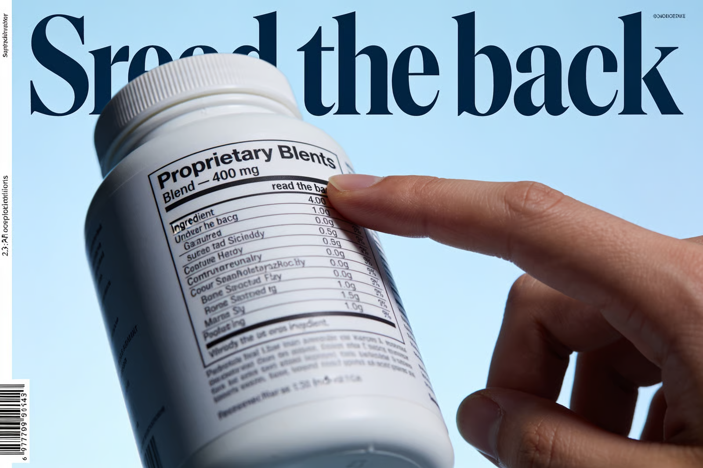

For six years I worked on the manufacturing side of the supplement industry, in the rooms where gummies get designed before a brand ever puts a name on the jar. I sat in the meetings where a founder came in with a Pinterest board and a target price of nineteen ninety nine, and we told them what we could physically put in a gummy for that. Then the marketing team wrote the label.
I want to explain something that took me years to fully accept. The problem with most hair growth gummies is not that the ingredients are fake. The problem is chemistry and space. A gummy is mostly sugar, pectin or gelatin, water, and flavor. Whatever is left over is where your actives live, and it is not much. Everything that follows comes from that one constraint.
A Gummy Is Candy First and a Supplement Second
Take a standard two gummy serving. Most of that mass has a job that has nothing to do with your hair. It has to gel. It has to survive a warehouse in July. It has to taste like berry instead of like a vitamin, because the entire reason gummies outsell capsules is that people actually remember to take them. That is a real advantage and I do not want to pretend otherwise. But the space you have left for active ingredients is small, and the ingredients that would matter most for hair are bulky.
This is why you will see biotin in enormous amounts on a gummy label and saw palmetto, if it appears at all, in an amount that would be a rounding error in an actual study. Biotin is measured in micrograms. You can put an absurd sounding ten thousand micrograms of it in a gummy and it takes up almost no room, and ten thousand is a big impressive number on a label. Saw palmetto extract in the doses used in research is measured in hundreds of milligrams. It is bitter, it is oily, and it will not fit. So it does not go in, or a token amount goes in so it can be printed on the front.
Once you understand that, the ingredient panel on almost every hair gummy on the shelf starts to read like a confession.
The Biotin Number Is Big Because Biotin Is Cheap and Small
Here is the part nobody in my old industry likes saying out loud. Biotin supplementation reliably helps hair in one situation, which is when a person is actually deficient in biotin. True biotin deficiency is rare. It shows up in specific medical conditions, in people on certain long term medications, in people with particular genetic disorders. It is not the reason your part is widening at thirty four.
If you are not deficient, taking three hundred times the amount of biotin your body uses does not give you more hair. Your body does not stockpile it. It is water soluble, so the overwhelming majority of that ten thousand microgram dose leaves your body the same day. You are, and I say this with affection because I helped build these, buying an extremely expensive way to make your urine slightly more interesting.
Worse, high dose biotin is not perfectly inert. It interferes with a widely used class of laboratory blood tests, the kind used to measure thyroid hormone and, critically, the troponin test used to check whether someone is having a heart attack. The FDA has issued safety communications about this. High dose biotin can skew those results, in some cases toward a falsely reassuring number. If you take a hair gummy and end up in an emergency room, that is a thing worth mentioning to the person taking your blood. I have never once seen that printed on a gummy label.
"Proprietary Blend" Is a Legal Way to Not Tell You the Doses

Turn the bottle around. If you see the phrase proprietary blend, followed by a total milligram number and then a list of ingredients underneath it, you have just been told nothing. The rule is that the total has to be accurate and the ingredients have to be listed in descending order by weight. That is all. The individual amounts do not have to be disclosed.
So a four hundred milligram blend of saw palmetto, horsetail extract, ashwagandha, bamboo silica, and a handful of botanicals could be three hundred and ninety milligrams of the cheapest thing on that list and two milligrams each of everything else. It is legal. It is common. It is, frankly, the whole reason the proprietary blend exists as a format. It was sold to brands like me as protecting the formula from competitors. Nobody was copying the formula. The formula was protecting itself from you.
When a brand is proud of its doses, it prints its doses. Every single time.
The Word Is "Clinically Studied Ingredient," Not "Clinically Studied Product"
Read that phrase again on the next bottle you pick up. Clinically studied ingredient means someone, somewhere, ran a study on that ingredient. It does not mean they ran a study on this product. It does not mean this product contains the dose that was studied. It does not mean the study was good, or large, or that it was not funded by the company selling the ingredient to manufacturers like the one I worked for.
Ingredient suppliers sell their raw material with a study attached. That study is a sales document. It gets handed to the brand, the brand puts clinically studied on the front of the box, and the dose that got studied never makes it into the gummy because it would not fit and it would triple the cost per unit. Nothing illegal has occurred. The ingredient was studied. Your gummy just has a whisper of it.
Nobody Checked This Before It Went on Sale
The assumption most people carry is that a supplement on a shelf at a real store was approved by somebody. It was not. Under the law that governs supplements in the United States, a company does not have to prove a product is effective before selling it, and it does not have to prove it is safe in the way a drug does. Regulators act after the fact, if something goes wrong. The burden sits with the manufacturer, and the manufacturer is grading its own homework.
That is also the reason for the small print on the back that reads, more or less, these statements have not been evaluated by the Food and Drug Administration, this product is not intended to diagnose, treat, cure, or prevent any disease. It is not boilerplate. It is the legal price of being allowed to say supports healthy hair on the front. The disclaimer and the claim are a matched set. You cannot have one without the other, and once you notice that you cannot unsee it.
Notice the verbs, too. Supports. Promotes. Helps maintain. Nourishes from within. No hair gummy in the country is permitted to tell you it grows hair, because that would be a drug claim, and a drug claim requires evidence they do not have.
What Is Actually in the Jar May Not Match the Label
Vitamins degrade. Heat, light, moisture, and time all eat away at the actives in a gummy, and a gummy is a wet, sugary, chemically busy environment. Manufacturers account for this by adding an overage, meaning you put in more than the label says so that at the end of the shelf life there is still enough left to justify the number. That is standard practice and it is not sinister. What is not standard is anyone verifying it independently.
So look for one specific thing. Not GMP certified facility, which describes the building and says nothing about what is in your jar. Look for third party tested, with a named lab, and ideally a certificate of analysis you can actually pull up by batch number. A brand that pays for batch testing will make it very easy to find, because it costs them money and they want the credit. A brand that does not will use the word quality a great deal.
The Collagen and Keratin Question
One more thing that gets me, because it comes up in every product meeting. Adding collagen or keratin to something you swallow does not send collagen or keratin to your hair. Your digestive system takes those proteins apart into amino acids, the same way it takes apart a chicken breast. Your body then uses those amino acids wherever it decides to use them, and it does not read the marketing copy first. If you are eating enough protein, you already have the raw material. If you are not, the fix is food, not a gummy with a picture of a strand of hair on it.
So What Would Actually Be Worth Your Money
I will be honest about where the evidence sits. If you are deficient in something, correcting that deficiency helps, and the only way to know is a blood test, not a quiz on a supplement brand's website. Iron and ferritin in particular are worth checking if you are a woman who is losing hair, along with thyroid. Those are real, common, and fixable, and a gummy will not find them for you.
Beyond that, hair follicles live in your scalp. The evidence for hair growth has always been strongest for things applied to the scalp, where the follicle actually is, rather than things routed through your entire digestive system in the hope that some fraction eventually arrives. A well formulated topical serum with disclosed concentrations, used consistently for months, is a far more defensible bet than a candy with a proprietary blend. I am not naming products, and I would be suspicious of anyone who did in an article like this one. I am telling you which aisle to stand in.
And when you get there, do the thing I now do reflexively in every drugstore. Turn the bottle around. If the doses are hidden, the doses are not worth showing you.